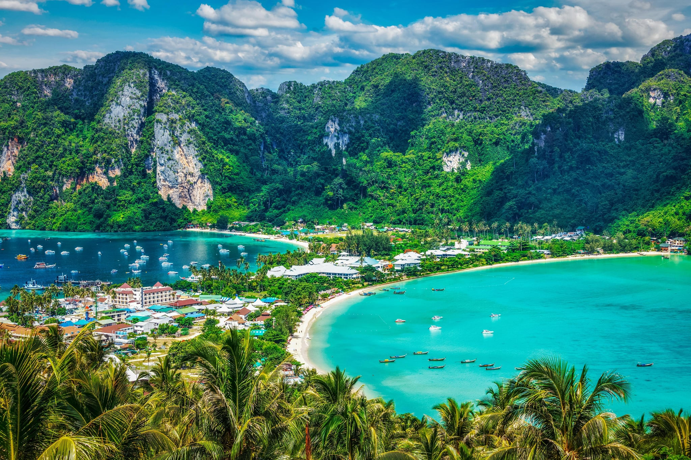

Your ultimate local travel companion. Find tourist spots, taste local dishes, and experience culture effortlessly all powered by smart maps.

About
LakbayLokal is a digital gateway designed to transform how you experience the Philippines. Our mission is simple: to make local travel more accessible, immersive, and deeply rooted in the stories that make each province unique.
The Heart of the Journey
We curate our guides around three essential elements that define the Filipino spirit:
Tourist Spots: We go beyond the famous landmarks. We use local insights to find the "hidden gems" that aren't on every postcard.
Food & Flavors: Food is the language of our culture. We map out everything from the best carinderias to acclaimed regional restaurants.
Culture & Heritage: Every city has a soul. We highlight the festivals, dialects, and history that give a place its identity.